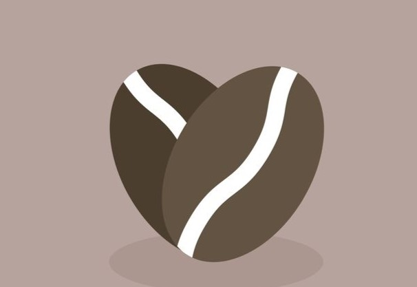

<!DOCTYPE html>
<html lang="en">

</html>

<head>
    <meta charset="UTF-8" />
    <meta name="viewport" content="width=device-width,initial-scale=1.0" />
    <title>Nuestros Cursos Coffee Arabica</title>
    <!--meta tag :kw 5 a 15-->
    <meta name="ketwords" content="cafe , cursos de cafe , barismo , barista, cafe de especialidad, cursos para baristas desde cero">
    <!--meta description-->
    <meta name="description" content="Descubre nuestros cursos de café de especialidad para aprender desde la preparación perfecta hasta la cata avanzada. Ideal para quienes quieran formarse como baristas y amantes del café arabica. Aprende con expertos.">
    <!--meta author-->
    <meta name="author" content="Carolina Benitez">
    <!--bootstrap-->
    <link href="https://cdn.jsdelivr.net/npm/bootstrap@5.3.3/dist/css/bootstrap.min.css" rel="stylesheet"
        integrity="sha384-QWTKZyjpPEjISv5WaRU9OFeRpok6YctnYmDr5pNlyT2bRjXh0JMhjY6hW+ALEwIH" crossorigin="anonymous">
    <!-- <link rel="stylesheet" href="styles.css"> -->
    <link rel="stylesheet" href="./css/style.css">
    <link rel="stylesheet" href="css/bootstrap.css">
</head>
 <body class="fondo">
        <script src="https://cdn.jsdelivr.net/npm/@popperjs/core@2.11.8/dist/umd/popper.min.js"
            integrity="sha384-I7E8VVD/ismYTF4hNIPjVp/Zjvgyol6VFvRkX/vR+Vc4jQkC+hVqc2pM8ODewa9r"
            crossorigin="anonymous"></script>
        <script src="https://cdn.jsdelivr.net/npm/bootstrap@5.3.3/dist/js/bootstrap.min.js"
            integrity="sha384-0pUGZvbkm6XF6gxjEnlmuGrJXVbNuzT9qBBavbLwCsOGabYfZo0T0to5eqruptLy"
            crossorigin="anonymous"></script>
        <header>
            <nav class="navbar navbar-expand-lg bg-body-tertiary">
                <div class="container-fluid">
                  <a class="navbar-brand" href="./cursos.html">CURSOS</a>
                  <button class="navbar-toggler" type="button" data-bs-toggle="collapse" data-bs-target="#navbarNav" aria-controls="navbarNav" aria-expanded="false" aria-label="Toggle navigation">
                    <span class="navbar-toggler-icon"></span>
                  </button>
                  <div class="collapse navbar-collapse" id="navbarNav">
                    <ul class="navbar-nav">
                      <li class="nav-item">
                        <a class="nav-link active" aria-current="page" href="./nosotros.html">NOSOTROS</a>
                      </li>
                      <li class="nav-item">
                        <a class="nav-link" href="./index.html">INICIO</a>
                      </li>
                      <li class="nav-item">
                        <a class="nav-link" href="./sesion.html">SESION</a>
                      </li>
                      <li class="nav-item">
                        <a class="nav-link" href="./tutores.html">TUTORES</a>
                      </li>
                    </ul>
                  </div>
                </div>
              </nav>
        </header>
        <div class="coffee">
            <p id="palabra"><strong>COFFEE ARÁBICA</strong></p>
        </div>
        <div class="palabra">
            
        </div>
            <h1 class="cursosdebarista">CURSOS INTEGRALES</h1>
            <div class="grid1">
                <div>
                    <h2 class="analisis">ANÁLISIS SENSORIAL DE ESPRESSO</h2>
                    <p class="parrafo1"> En este curso aprenderás la importancia de identificar el sabor de un espresso
                        de especialidad.
                        Te enseñaremos sobre los diferentes sabores que pueden presentarse en esta bebida. </p>
                    <p class="parrafo1">El café es un fruto, en el
                        hay dulzor y acidez, encontrar el equilibrio es el objetivo final de nuetros 4 días de
                        aprendizaje. </p>
                    
                </div>
                <div>
                    <h3>ARTE LATTE</h3>
                    <p class="parrafo2"> En este curso aprendrás la forma correctar para la texturización de una leche
                        suave y uniforme,
                        sin exceso de micoburbujas que puedan entorpecer tu dibujo. Uso adecuado de pitchers, cantidad
                        de ml por taza a ocupar y
                        temperatura. </p>

                    <p class="parrafo2"> La altura y tipo de vertido son algunos de los tips que enseñaremos en los 4
                        días de clases presencial.
                        No desperdicies la oportunidad de desarrolar nuevas habilidades con este curso de latte art.
                    </p>
                    
                </div>
                <div>
                    <h4>CALIBRACIÓN DEL CAFÉ</h4>
                    <p class="parrafo2">
                        ¿Has oído alguna vez de qué es la calibración?
                        Si tienes nociones básica, en este curso aprenderás a mayor profundidad los tipos de
                        calibraciones para cada
                        método de café.
                        Haremos varias prácticas para cada método y probaremos el resultado que mejor se acerque al
                        número de molienda. </p>
                    
                    
                </div>
                </div>
                <footer class="footer">
                    <address class="ubicacion">Estamos ubicados en la Región Metropolitana, Santiago de Chile</address>
                    
   
            </footer>
            </body>
             </html>